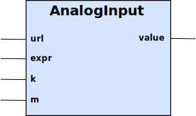

AnalogInput block is used to obtain numeric data from an external source, such as a sensor or a value from the Internet.

Table 7. Inputs
| Name | Type | Default | Description |
|---|---|---|---|
url | String | <empty> | The URL to read. |
k | Double | 1.0 | The multiplier for the raw value coming from the external system. |
m | Double | 0.0 | The offset for the raw value coming from the external system. |
expr | String | <empty> | The expression used to parse the read value from the URL, into a numeric value. |
The value output is updated by the values received from the URL, after application of the expr which is URL Driver specific.
All values are scaled with a multiplier and an offset so that value = external * x + m.
The expression input is used to parse the content that was obtained from the URL. See the URL Driver for detailed information on the formats and how the evaluation is done.
The url follows the W3C standard of URI formats. Which protocols that are supported are;
Table 9. Protocols
| Scheme | Format | Description |
|---|---|---|
http | Reads well-formed pages via http. | |
xnet | xnet://device/point | Reads the point from the device. Valid point names are ai, aq, di, dq, setp, ts. The device is the number of the XNet unit. |